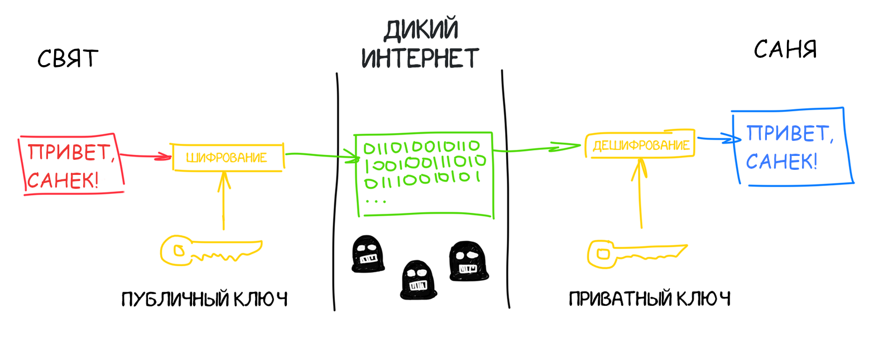

Покупая мивину в шерифе, вы вводите пин-код от своей карты, разрешая магазину спросить у банка есть ли у вас на счету 35 рублей. Другими словами, вы подписываете своим пин-кодом транзакцию на 35 рублей, которую банк подтверждает или отклоняет.
Наши записи типа «Занял Саше 500 рублей» — тоже транзакции. Но у нас нет банка, авторизующего автора транзакций. Как нам проверить, что Саша втихую не добавил запись «Макс должен Святу 100500 рублей»?
В блокчейне для этого используется механизм публичных и приватных ключей, айтишники давно используют их для авторизации в том же SSH.
Коротко о том, как работает эта сложная, но красивая математика: вы у себя на компьютере генерируете пару длинных простых чисел — публичный и приватный ключ. Приватный ключ считается супер-секретным, потому что может расшифровать то, что зашифровано публичным. Но наоборот тоже работает. Если вы расскажете публичный ключ всем друзьям, они смогут зашифровать им любое сообщение так, что прочитать его сможете только вы, так как владеете приватным. Но кроме этого у публичного ключа есть полезный эффект — с помощью него можно проверить, что данные были зашифрованы именно вашим приватным ключом, не расшифровывая при этом сами данные.
